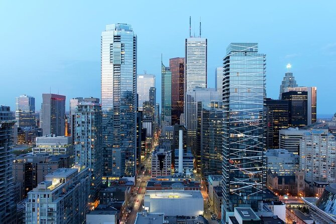

Welcome to Toronto: Explore the Diverse Heart of Canada!
Discover Toronto's Vibrant Neighborhoods and Top Attractions
Are you ready to embark on an unforgettable journey through one of Canada's most exciting and diverse cities? Welcome to Toronto, a melting pot of cultures, history, and modernity, where every corner holds a unique experience waiting for you!
Explore Toronto's Iconic Neighborhoods
Toronto boasts an array of distinctive neighborhoods, each with its own charm and character.
Yorkville: Indulge in luxury shopping, chic boutiques, and upscale dining in this high-end district. The perfect blend of elegance and sophistication awaits you.
Queen West: Known as one of the world's coolest neighborhoods, Queen West is a hub for artists, hipsters, and trendsetters. Immerse yourself in its artistic spirit, vibrant street art, and eclectic shops.
Harbourfront: Experience the breathtaking beauty of Lake Ontario as you stroll along the waterfront. Enjoy outdoor activities, cultural events, and delicious waterfront dining.
The Entertainment District: Get ready for a night of entertainment! This bustling area is home to theaters, music venues, and a lively nightlife scene.
The Financial District: Witness the hustle and bustle of Canada's financial hub. Admire impressive skyscrapers, including the iconic CN Tower, as you explore this dynamic area.

St. Lawrence Market: Satisfy your culinary cravings at one of the world's best food markets. Indulge in fresh produce, artisanal foods, and international cuisine.
Must-See Attractions
No visit to Toronto is complete without exploring its top attractions:
The Eaton Centre:Shopaholic's paradise! This iconic shopping destination offers a vast array of stores and restaurants, attracting over 52 million visitors annually.
CN Tower: Reach new heights at the CN Tower, one of the Seven Wonders of the Modern World. Enjoy breathtaking views of the city from its observation deck.
Royal Ontario Museum (ROM): Immerse yourself in art, culture, and history at Canada's largest museum, featuring an impressive collection of exhibits from around the world.
Art Gallery of Ontario (AGO): Discover extraordinary works of artby Canadian and international artists, housed in a stunning architectural masterpiece.
Toronto Islands: Escape the city buzz and take a ferry ride to the Toronto Islands. Enjoy picnicking, biking, and stunning views of the skyline.
Plan Your Unforgettable Toronto Experience
Are you excited to explore Toronto's,vibrant neighborhoods and attractions? Let us be your guide to this captivating city! Whether you're interested in shopping, art, culture, or dining, Toronto has something for everyone.
Stay tuned for more insider tips, local recommendations, and exciting events. Toronto awaits you with open arms, ready to offer a truly unforgettable experience!
Start your Toronto adventure now and create memories to last a lifetime!

.jpg)